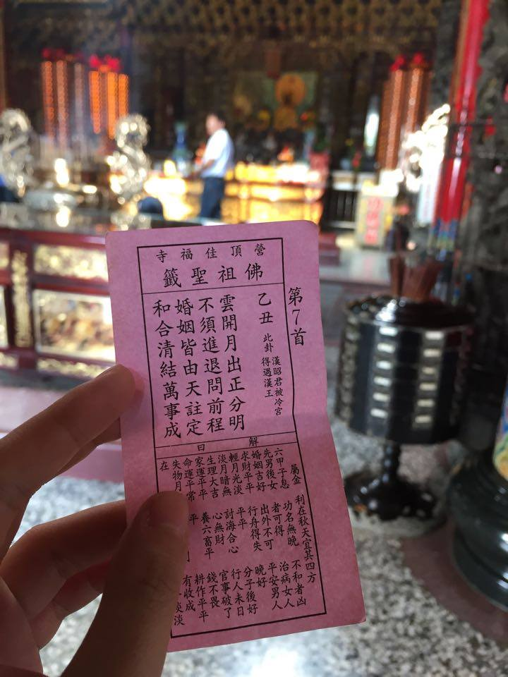
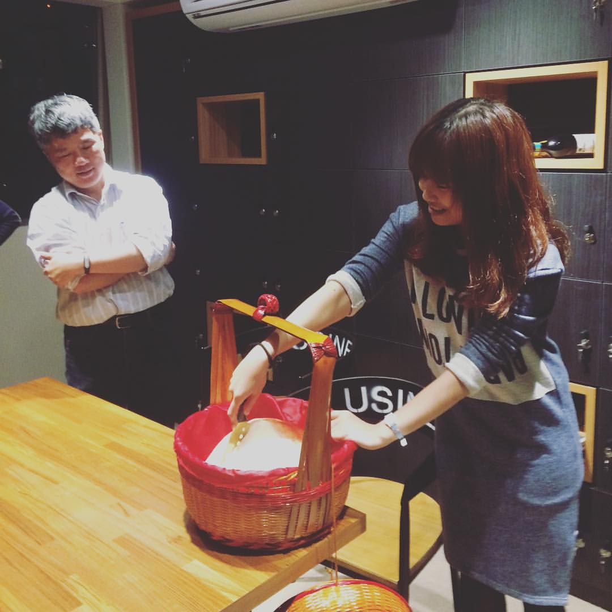

I am Mimi Chen
 git's website
git's website
[ 長大了，才發現自己跟神明說話的時間也越來越長。 ]
家裡信奉道教，除了初一、十五要拜拜，每逢佳節或是神明生日就一定可以看到媽媽去菜市場採購，回到家仔細清洗過後，大桌一擺，呈上三牲四果給神明吃，上完三次香後，開始焚燒金紙，再將酒水順時鐘灑在金爐旁邊。
當然，也有世代相傳、誠心供奉的地方廟宇，這間廟位於田野中間，主神是觀音佛祖，園區非常大，正中間正立一座三、四層樓高的觀音雕像，旁邊圍繞著兩隻老虎，霸氣十足。廟宇前的廣場，有一棵母子樹，鬍鬚相連、枝葉茂盛，樹下常常會有很多阿北喝茶聊天，或是偶爾有攤販來販售小吃。

